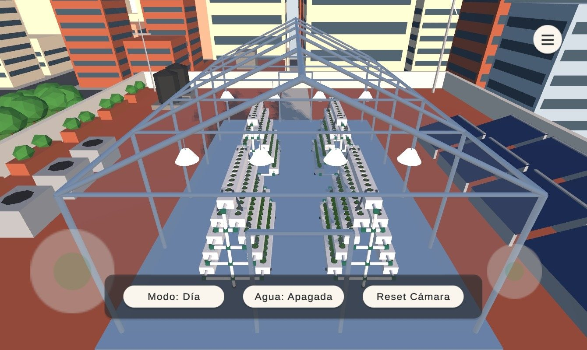
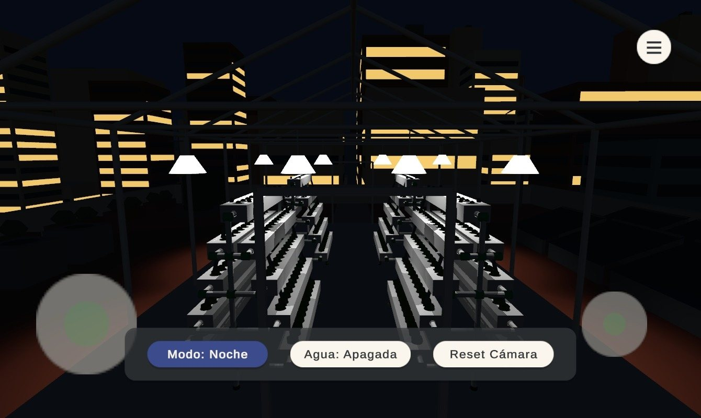
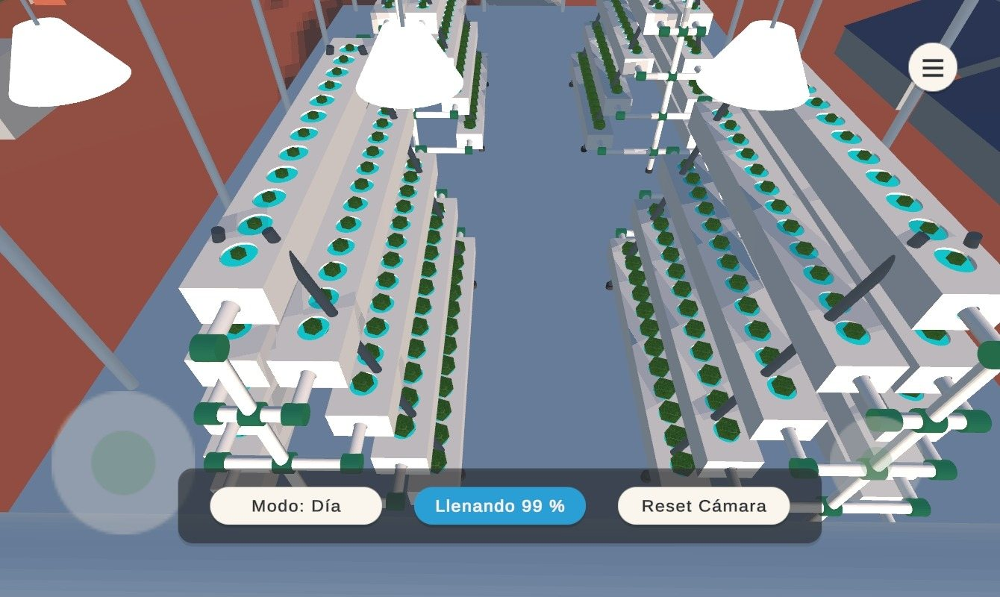
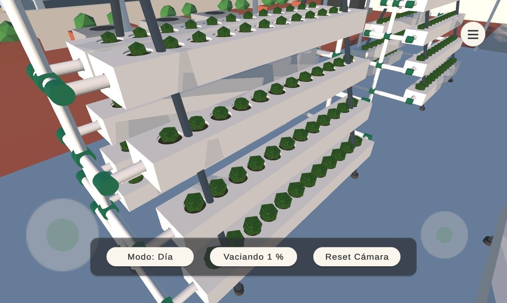
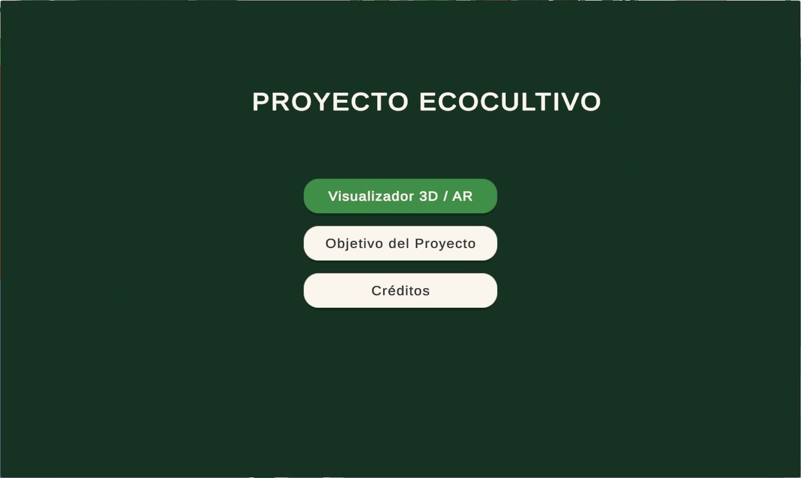
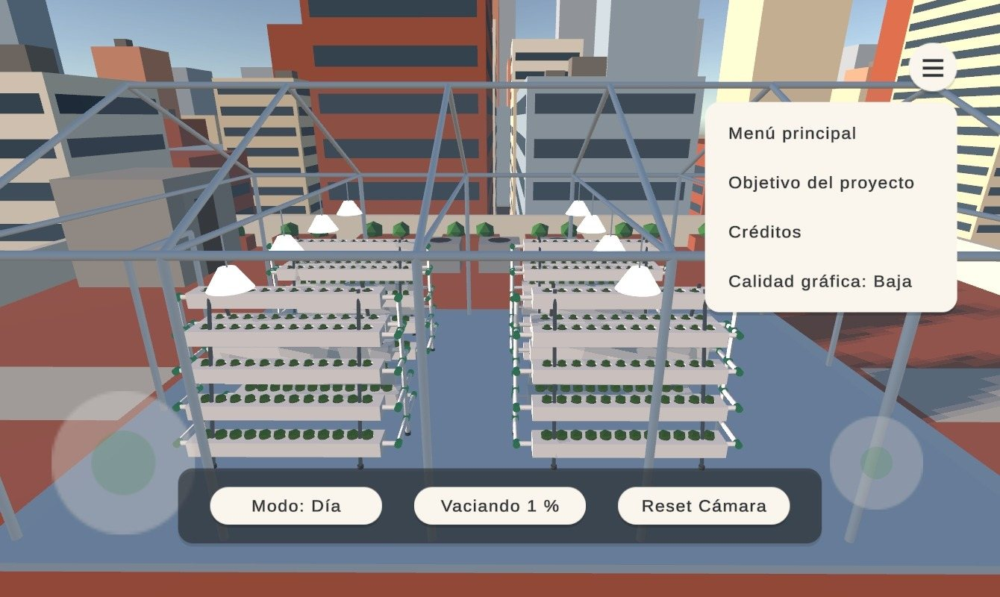

Qué puedes hacer en EcoCultivo
Una forma visual de entender cómo se puede producir alimento en espacios urbanos que hoy no se aprovechan, usando menos agua y sin suelo.
-
Encender el riego
El agua recorre cada canal de un extremo al otro y baja al siguiente nivel, con el porcentaje de llenado en pantalla.
-
Cambiar entre día y noche
De noche se encienden las lámparas de cultivo sobre los maceteros y las ventanas de los edificios vecinos.
-
Recorrer la azotea
Muévete con el joystick y gira la vista con el otro dedo: paneles solares, tinacos, huerto urbano y la ciudad alrededor.
-
Conocer el proyecto
Consulta el objetivo del sistema hidropónico y los créditos desde el menú de la app.
Cómo instalarla
La app no está en Play Store: se instala directamente desde el archivo APK. Toma menos de un minuto.
Android te pedirá permiso para instalar una app descargada del navegador. Es normal en apps que no vienen de Play Store.
-
Descarga el APK
Desde tu teléfono, toca Descargar para Android. Si el navegador avisa que el archivo puede ser dañino, elige Descargar de todos modos.
-
Abre el archivo
Toca la notificación de descarga terminada, o búscalo en la app Archivos dentro de Descargas.
-
Permite la instalación
Si aparece el aviso, toca Configuración y activa Permitir de esta fuente. Luego regresa.
-
Instala y abre EcoCultivo
Toca Instalar. Si Play Protect pregunta, elige Instalar de todas formas. La app aparecerá en tu pantalla de inicio.
Dentro del invernadero






Requisitos
- Sistema
- Android 8.0 (Oreo) o superior
- Procesador
- 64 bits (ARM64)
- Versión
- 1.0.0
- Conexión
- No necesita internet después de instalarla
Controles
- Moverte
- Joystick en la mitad izquierda de la pantalla
- Mirar
- Arrastra el dedo en la mitad derecha
- Regresar
- Botón Atrás de Android
- Calidad
- Menú ≡ dentro de la vista 3D